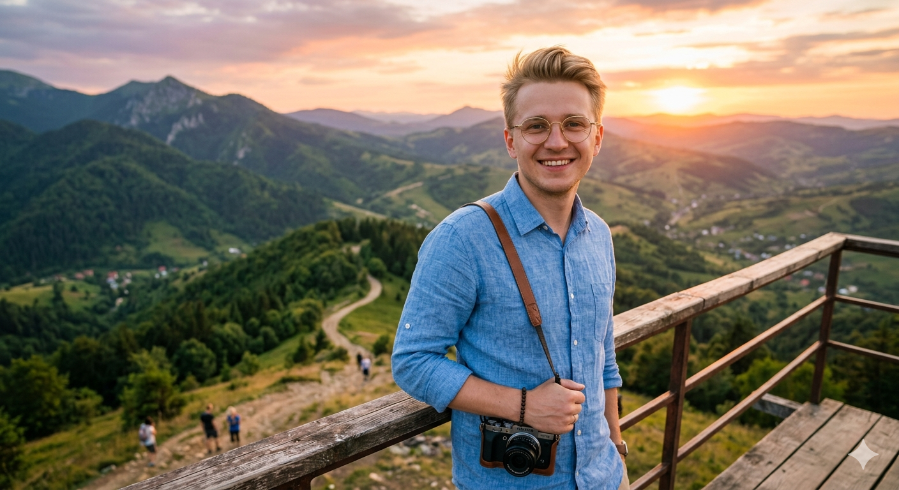

Привіт! Я Петро Волощук — мандрівник, фотограф-аматор та збирач неймовірних історій. Моя місія — показати вам, що світ набагато ближчий, ніж здається, а за кожним поворотом ховається диво.
Читати блог
"Подорожі — це єдина річ, купуючи яку, стаєш багатшим. Я колекціоную не магніти, а смаки ранкової кави в різних куточках планети."— Петро Волощук, з нотаток у Празі
Вони зі мною у 27 країнах. Одного разу я залишив їх на даху кафе в Барселоні, і довелося повертатися 15 км пішки. Врятували!
Мій ранок починається з пошуку найкращої філіжанки еспресо в місті. Вважаю, що через каву можна зрозуміти культуру країни.
Мандрую лише з ручною поклажею. Улюблений наплічник об'їздив зі мною півсвіту та знає всі секрети бюджетних авіаліній.
Замість черг у Лувр я оберу прогулянку дахами старих кварталів або розмову з місцевим пекарем. Шукаю справжнє життя.